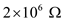
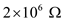

In the circuit shown in Figure 1,
 is the transconductance and
is the transconductance and
 is the transresistance
is the transresistance
Apply Kirchhoff’s current law at node 4.
Write the expression for output voltage,  .
.
Here,  is the open-loop gain op-amp.
is the open-loop gain op-amp.
Therefore, the expression for open-loop gain of the amplifier is .
 and  for
and  for  .
.